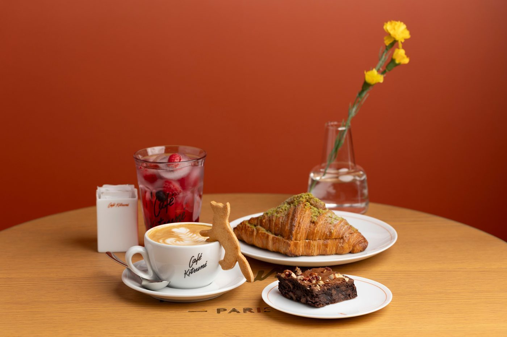

Take a look


A family-run bakery in Knoxville since 1998. The bakery makes a signature five-flavor pound cake, wedding, children's, and pound cakes, cupcakes, thumbprint cookies, cookies, banana pudding, and brownies, with special-occasion cakes and takeout.

617 N Gay St, Knoxville, TN 37917
Open Thursday to Friday, 10 AM to 4 PM, and Saturday, 10 AM to 2 PM, per the place listing.